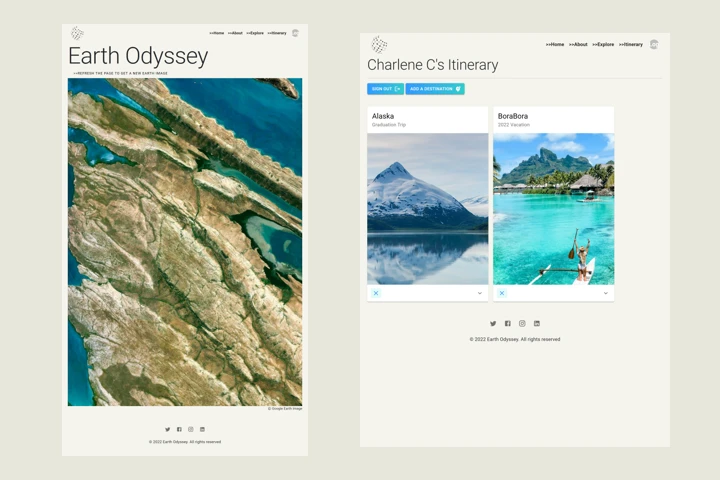
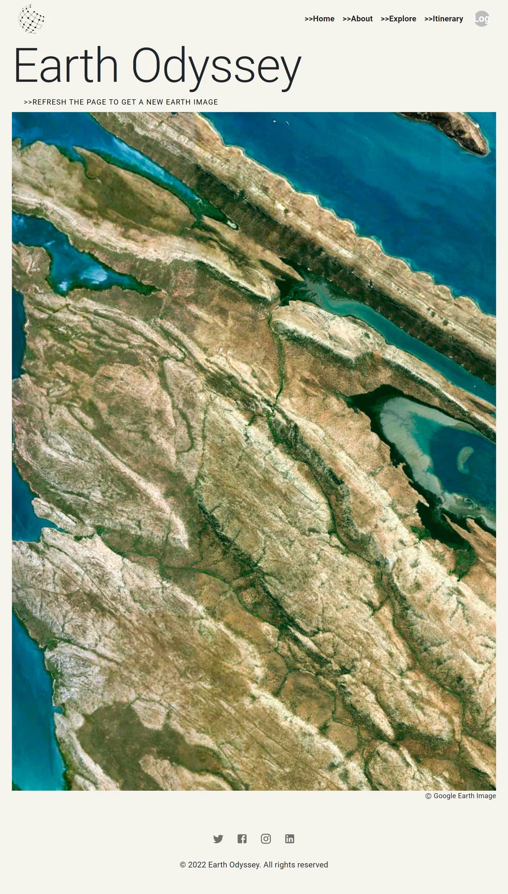
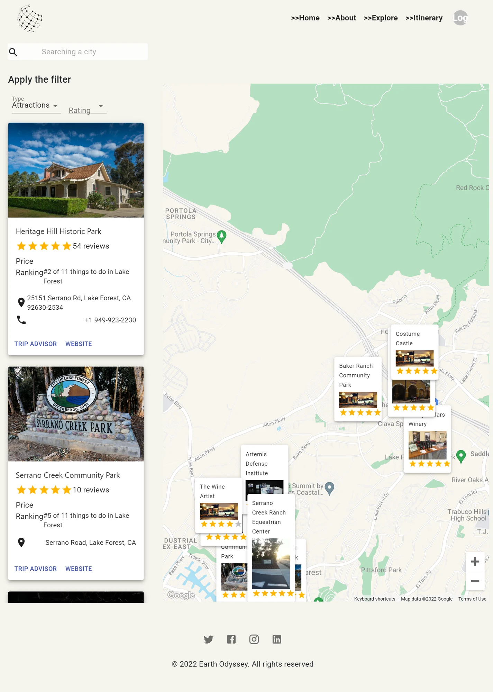
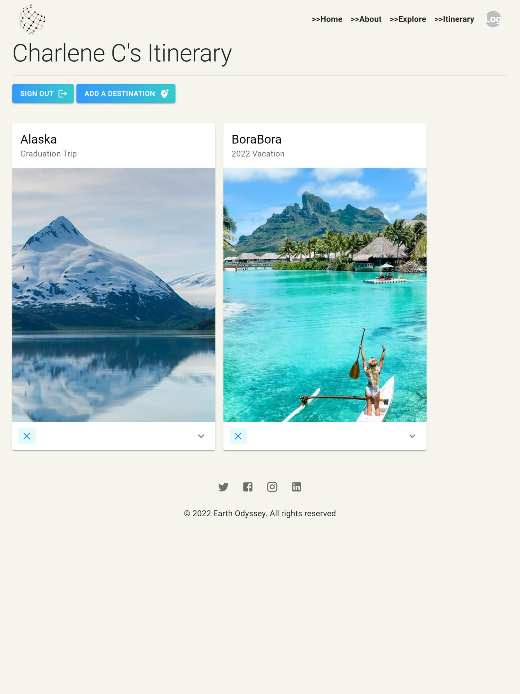
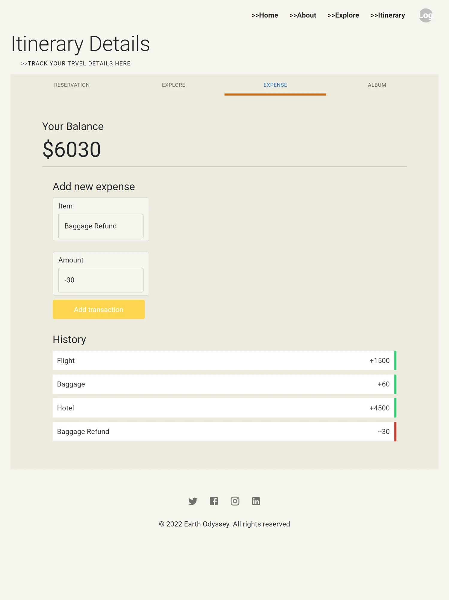
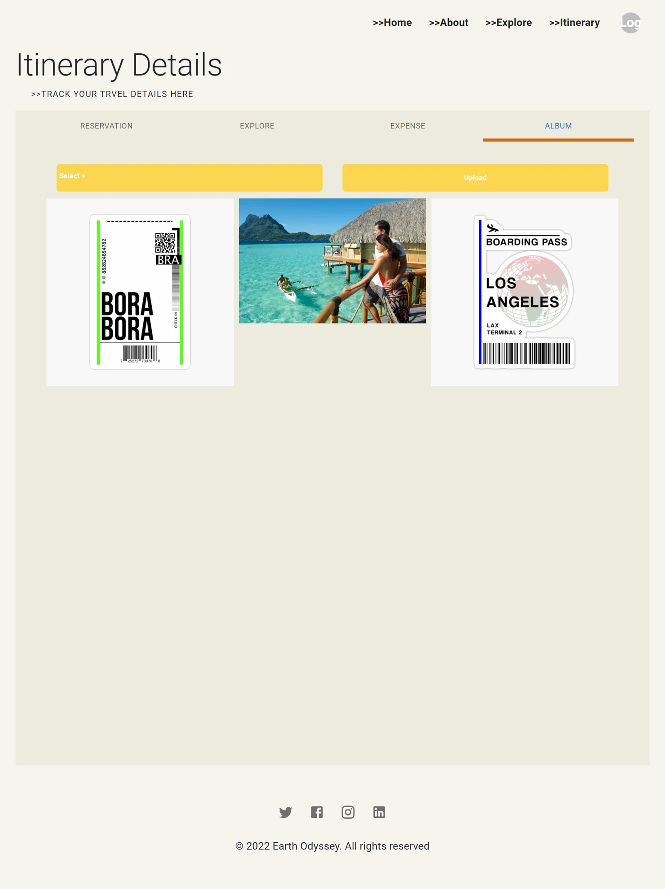

Earth Odyssey
One place for the journey, before and after departure.
An all-in-one travel companion that connects destination discovery with personal itineraries, reservations, expenses, and travel memories.
Interface design · Full-stack development
React · Material UI · Google Maps · Firebase

Find the next destination
Map-based discovery combines attraction search and filtering with geographic context. Google Maps and Travel Advisor data support exploring places before adding them to a trip.




Bring the details together
Saved itineraries give each journey a home. Travelers can organize accommodation, flights, and rentals alongside their plans, instead of scattering details across separate notes.



Keep track, keep the memories
An expense and balance tracker helps organize trip costs. A personal photo album extends the itinerary beyond planning. Firebase Authentication, Firestore, and Storage support accounts, saved records, and uploaded images.



